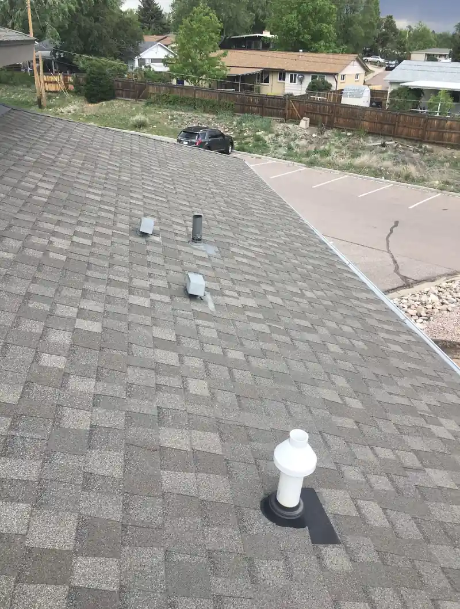
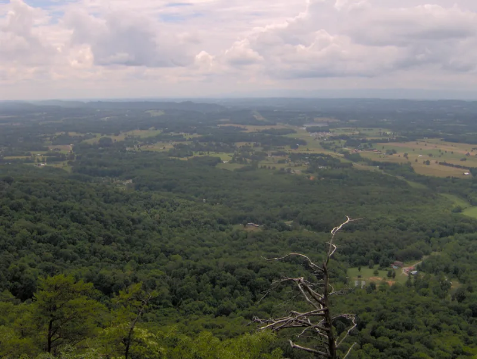
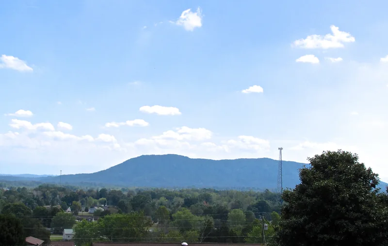

Getting a house ready for winter around here comes down to five jobs: clear the gutters once the leaves are down, stop warm air from leaking into the attic, look over the flashing, cut back limbs that hang over the roof, and have a plan for the night an ice storm takes the power out. None of it needs a big budget. Most of it fits into two Saturdays in November.
East Tennessee winters aren't long, but they're hard on a house in their own way. Snow rarely sits on a roof here for weeks. What we get is cold rain that turns to ice overnight, a thaw, and then another round. That freeze and thaw is rough on gutters and trees.
1. Clean the gutters after the last leaves fall
Timing matters. Clean in October and the oaks drop the rest of their leaves a week later. Wait until the trees are bare.
If you only get to one job on this list, our opinion is it should be the gutters. A clogged gutter holds water against the fascia board all winter. When that water freezes, it pushes on the hangers and can pull a whole run away from the house. Water that can't get into the gutter spills over the front and soaks the ground right at your foundation.
While you're up there:
- Run a hose into each gutter and watch the downspout. If water backs up, the clog is in the downspout, usually at the bottom elbow.
- Look for gutters that sag between hangers or have pulled away from the fascia.
- Make sure each downspout empties onto a splash block or an extension, not right against the foundation.
We go deeper on timing by tree type in when to clean gutters under East Tennessee trees. If the gutters themselves are worn out, our gutters page covers replacing them.

2. Stop warm air from leaking into the attic
In winter your attic should feel close to the temperature outside. When it doesn't, warm air from the house is usually sneaking up through gaps around ceiling lights, the attic hatch, plumbing stacks and wiring holes. That air costs you on the heating bill, and it carries moisture with it. The moisture condenses on the cold underside of the roof decking, and after a few winters you can find frost on the nail tips and damp insulation.
ENERGY STAR says sealing air leaks and adding insulation can save up to 10 percent on your annual energy bills (ENERGY STAR). Most of the sealing is a job for a can of spray foam and a tube of caulk:
- Go into the attic on a cold day with a flashlight. Look for dark, dirty patches on top of the insulation. Dirty insulation means air has been moving through it, so there's a leak right below.
- Seal the gaps where pipes and wires come up through the ceiling. Use foam for small gaps and fire-rated material around anything hot, like a chimney or a furnace flue.
- Weatherstrip the attic hatch or pull-down stairs, and lay a piece of rigid foam board on top of the hatch.
- Check how deep the insulation is. ENERGY STAR publishes recommended insulation levels by climate zone, so you can see where your attic should be.
Don't block the soffit vents while you work. The roof needs cool air coming in at the eaves and going out at the ridge, winter and summer.
3. Look at the flashing and the pipe boots
Flashing is the metal that turns water wherever the roof meets something else, like a chimney, a wall, a skylight or a valley. Pipe boots are the rubber collars around the plumbing vents. On a lot of roofs, both give out before the shingles do.
From the ground with a pair of binoculars, look for flashing that's lifted, or patched with a smear of tar. Check the pipe boots for cracked rubber or rubber that's split away from the pipe. A stain on a ceiling near a chimney or a bathroom usually points to one of these. Our once-a-year roof check from the driveway walks you through it slope by slope.

4. Cut back the limbs over the roof
This is the job that pays off in an ice storm. NWS Morristown issues an ice storm warning when more than a quarter inch of ice is expected to build up in 12 hours (NWS Morristown). A quarter inch doesn't sound like much until it's on a tree. The National Weather Service says heavy ice can bring down trees and topple utility poles, and can knock out power for days while crews repair the damage (National Weather Service).
In summer, a limb over your roof is shade. Coated in ice, it's a heavy load hanging over your shingles, waiting for a gust. Walk the yard and look up. Any limb that reaches over the roof should come down before winter, and so should any dead limb tall enough to reach it if it fell. Big limbs and anything near a power line are jobs for a tree service, not for you on a ladder with a chainsaw.
5. Plan for the night the power goes out
When ice takes the power out, you want the plan made before it happens.
- Know where your main water shutoff is, in case a pipe freezes and splits.
- Keep a tarp, some rope and a good flashlight in the garage.
- If you run a generator, keep it outside. Ready.gov says generators belong outdoors and at least 20 feet away from windows, doors and attached garages (Ready.gov).
- Save our number, (865) 830-8126, in your phone before you need it.
If a limb does come through the roof, our emergency repair page has what to do first and how to reach us at any hour.

What about ice dams?
An ice dam is the ridge of ice that builds along the eaves when snow melts on a warm roof and freezes again at the cold edge. Water backs up behind the ice and works its way under the shingles. Here they show up after the occasional heavy snow, and the cause is usually a warm attic melting the snow from below. That's one more reason to do step 2.
Questions
Can I clean my gutters from the ground?
On a one-story house, often yes. Telescoping gutter wands and leaf blower attachments work fine. On a two-story house or a steep lot, hire it out instead of standing on a tall ladder in cold, wet leaves.
Should I get my roof looked at before winter?
If it's been a few years, or you've had a bad storm since the last look, November is a good month for it. You'll find a lifted shingle or a cracked boot while the weather still lets someone fix it.